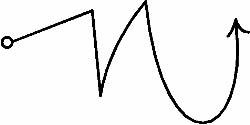
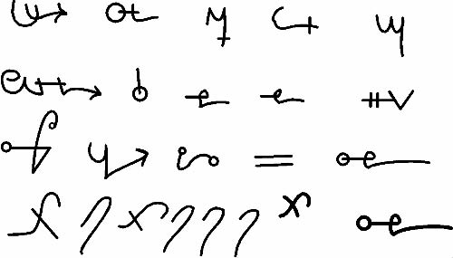

UR! NIPPUR!
ERIDU! KULLAH!
KESH! LAGASH!
SHURUPPAL SELAH!
Yaşamın Günü, Doğan Güneş
Bolluğun Günü, lütufkar Güneş
Kusursuzluğun Günü, Büyük Neşe
Kaderin Günü, Parlak Gece
Ey Parlayan Gün!
Ey Gülen Gün!
Ey Yaşamın ve Aşkın ve Talihin!
Yedi En yaşlı, En Bilgeler!
Yedi Kutsal, Alimler!
Benim Muhafızım olun, cilalı Kılıçlar
Benim Uyanıklığım olun, sabırlı Tanrılar
Beni koru Rabishu’dan
Ey Parlayan, İhtişamlı APHKALLHU!
Hangi Tanrıyı gücendirdim ben? Hangi Tanrıçayı? Hangi kurbanlığı sunmayı beceremedim? Hangi Bilinmez Kötülüğe teşebbüs ettim ki dışarı çıktığımda yüzlerce kurdun ürkütücü ulumaları eşlik ediyor bana?
Tanrımın vicdanı yerine gelsin!
Tanrıçamın vicdanı yerine gelsin!
Bilmediğim Tanrı yatışsın bana karşı!
Bilmediğim Tanrıça yatışsın bana karşı!
Bilmediğim Tanrının vicdanı yerine gelsin!
Bilmediğim Tanrıçanın vicdanı yerine gelsin!
Kürelerin üzerinde seyahat ettim ve Küreler korumaz beni. Uçuruma indim ve Uçurum korumaz beni. Dağların tepelerine yürüdüm ve dağlar korumaz beni. Denizlere yürüdüm ve Denizler korumaz beni.
Rüzgarın Tanrıları etrafıma üşüştüler ve öfkeliler. Dünyanın Tanrıları ayaklarımın etrafında sürünüyorlar ve öfkeliler. Ruhlar unuttu beni.
Zamanım kısaldı ve durmadan beni çağıran Ses beni alıp götürmeden önce tamamlayabileceğim kadarını tamamlamalıyım. Ay’ın günleri Dünya üzerindeki sayılı ve Güneşin de ve anlamını bilmiyorum bu alametlerin, ama bunlar onlar. Ve kahinler tükendi ve oldukları yerde dönüyor yıldızlar. Ve gökler kontrolden çıkmış, düzeni yokmuş gibi görünüyor ve Küreler eğri ve başıboş dolanıyorlar.
Ve Zdaq’ın İşareti yüzüyor yazı masamın tepesinde, ama rune taşlarını okuyamıyorum artık, çünkü bu Görüntü ümidimi kırıyor. Bu her zaman böyle miydi? Ve İşareti ardımda yükseliyor Xastur’un ve onun anlamını biliyorum, ancak yazamam, çünkü Başka bir yerden mesajlar aldım.
Güçbela konuşabiliyorum kendi sesimi tanımak için.
Uçurum esniyor önümde bütün haşmetiyle! Bir kapı kırıldı!
Bil ki, Yedi Küreye onların zamanlarında ve onların mevsimlerinde girmelisin, bir seferde bir kez ve asla birinden önce diğeri değil. Bil ki, Boşlukların Dört canavarı inisiyenin kanını talep ederler, her biri kendi zamanı ve mevsiminde. Bil ki, TIAMAT her daim yıldızlara yükselmenin yolunu arar ve Yukarısı Aşağısı ile birleştiğinde, Dünyaya yeni bir Çağ gelecektir ve Yılan tek parça olacak ve Sular tek olacaktır, yükseklerdeki gökler isimlenmediğinde.
Hatırla, köyünün ve ailenin çiftlik hayvanlarını korumayı. Yaşlı İşareti ve Irkın İşaretini. Ama Gözcüyü de, çünkü Onlar unutkan olurlar. Ve bu zamanda hiçbir kurbanlık sunulmamalıdır, çünkü içeri gelenler kandan paylarını isterler ve bu onları çağıracaktır.
Hatırla alçak yerde durmayı, yüksekte değil, çünkü Kadimler, kaybettikleri son şeyi aramak için tapınakların ve dağların tepesine rahatça kurulurlar. Ve bu tapınakların tepesinde verilen kurbanlar Onlara verilmiş olur.
Hatırla hayatının akan su olduğunu, durgun değil, çünkü ikincisi LILITU’nun yetiştiği yerdir ve onun yaratıkları Onların dölüdür ve Onların mabetlerinde, senin bilmediğin yerlerde tapınırlar. Ama nerede, duran bir kaya görsen, onlar orada olacaktır, çünkü böyleleri onların sunağıdır.
Hatırla işaretleri, muska sana, yani onu takana, bir lanet getirmesin diye, tek bir noktasını bile değiştirmeden anlattığım gibi oymayı. Bil ki, tuz, kurtçukların gazlarını soğurur ve aletleri temizlemek için yararlıdır. İlkin demonla konuşma, ama onun senle konuşmasına izin ver. Ve konuştuğu zaman, berrak, yumuşak ve hoş bir sesle ve senin dilinde konuşmasını tembihle ona, çünkü aksi takdirde seni şaşırtacak ve kükremesiyle seni sağırlaştıracaktır. Ve pis kokusunu uzakta tutmasını söyle ki bayılmayasın.
Hatırla kurbanı ne çok büyük ne de çok ufak yapmamayı, çünkü eğer çok ufak olursa, demon gelmeyecektir ya da eğer gelirse sana kızacak, bu yüzden, tembihlense bile, seninle konuşmayacaktır, çünkü Akit böyledir. Eğer kurban çok büyük olursa, demon çok büyüyecek ve hızlanacak ve kontrol edilmesi zorlaşacaktır. Ve böylesi bir demon Kudüs Rahibi, ABDUL BEN-MARTU tarafından uyandırılmıştır ve Filistin’deki koyun sürüleriyle çokça beslenmiş, korkutucu oranda büyümüş ve sonunda rahibi de yemiştir. Ama bu delilikti, çünkü Ben-Martu, yazıldığı gibi, yasak olan, İhtiyarlara tapıyordu.
Hatırla Kadimlerin Özlerinin her şeyde olduğunu, ama Yaşlı Tanrıların Özlerinin yaşayan her şeyde olduğunu ve zamanı geldiğinde bu çok değerli bir kanıt olacaktır.
Hatırla ARRA’yı, özellikle de Ateş Olanlar ile ilgilenirken, çünkü Onlar başkasına değil, yalnızca ona saygı duyarlar.
Hatırla saf tutmayı Ay’ı.
Ölüm Kültlerinden haberdar ol ve bunlar Köpeğin Kültü, Ejderin Kültü ve Keçinin Kültüdür, çünkü onlar Kadimlere tapanlardır ve Onların daima içeri girmesine izin ver, çünkü onlar konuşulması yasak olan formüllere sahiptirler. Ve bu kültler, kendi mevsimlerinde, gökyüzünün onlara ve onların ırkına açıldığı zamanın dışında güçlü değildir. Ve bizler ve Draconis’in Irkı arasında daima Savaş olacaktır, çünkü Draconis’in Irkı kadim zamanlarda, MAGAN’da ilk tapınaklar yapıldığında, her daim güçlüydü ve onlar yıldızlardan çok fazla güç çektiler, ama şimdi onlar Çorak toprakların Gezginleri gibi ve mağaralarda ve çöllerde ve kayalar diktikleri tüm yalnız yerlerde ikamet ederler. Bunlar, kadim kültlerin ve şimdi yalnızca üzüntü ve metrukluğun olduğu bu alanlara yaptığım yolculuklarım sırasında boyunca gördüklerimdir.
Ve onları Ayinlerinde gördüm ben, Zamanın ötesindeki Ülkelerden berbat Varlıklar çağırıyorlardı. Onların kayaları, sunakları üzerine oyulan İşaretleri gördüm. PAZUZU’nun ve ZALED’in işaretlerini ve XASTUR’un ve AZAG-THOTH’un işaretlerini ve benzer şekilde ISHNIGARRAB’ın ve Keçinin rezil Dölünün ve onların Irkının korkunç musikisinin.
Kayanın üzerine çalınan Kanı gördüm. Bir Kılıçla vurulan Kayayı gördüm ve Kayanın yükseldiğini ve Yılanın sürünüp gittiğini gördüm. Ve bu güç şüphe yok ki lanetlenmiştir, peki MARDUK nerede oyalanıyor? SHAMMASH’tan ne haber? Uyuyan Tanrılar gerçekten de uyuyor.
Peki ne suç işledim? Hangi Bilinmeyen Tanrıyı ihlal ettim? Hangi yasak şeyi yedim? Hangi yasak şeyi içtim? Nedir bu çilem! Yedi tane! Yedi kere Yedi tane! Ey Tanrılar! Hizmetkarınızı üzmeyin!
Hatırla Akrep Adamı Dağlarda ikamet eden. Eskiden yaratılmıştı TIAMAT tarafından Yaşlı Tanrılarla savaşsın diye, ama Onlar izin verdi kalmasına Altında Dağların. Ama bizi kandırdı bir kez ve bir kez daha yapabilir aynısını. Ama çağır onu Dışarıyı ilgilendiren, bilmen gereken, benim sana anlatmadığım bir şey olduğunda. Ve onun işareti basittir ve işte böyledir:

Ve yalnızca, onun olduğu yere yüzünü dön ve oraya gelecek ve konuşacaktır, ama Şafakta yapma bunu, çünkü sonra Güneş yükselir ve Akrebin gücü kalmaz, Toprağın altına dönmek zorunda kaldığı zamanlarda, Şafaktan Alacakaranlığa kadar yapma, çünkü bu, Aktin onu ilgilendiren maddesidir, çünkü bu yazılmıştır: Güneşe doğru kaldırmaması gereklidir başını.
Ve yine: Karanlık vakitlerdir onun zamanı.
Ve yine: Kapı hakkındakileri bilir, ama Kapıyı bilmez
Ve Akrep Adamın kendi Irkından bir başkası vardır, dişidir, onunla orda ikamet eder, ama onunla konuşmak yasaktır ve sana göründüğü zaman, defetmeyle bertaraf edilmelidir, çünkü onun dokunuşu Ölümdür.
Ve Ejderin Kültüne dair daha ne söyleyebilirim? Onlar, şu Yıldız, gökte en yüksekte olduğu zaman tapınırlar ve o Yıldız, tıpkı Köpeğin ve Keçinin Yıldızları gibi, IGIGI’nın Küresidir. Ve onlara tapanlar, bizimle aynı Irktan değil de, onların Yıldızlarının, Kadimlerin Irkından olsalar bile, her daim bizimle birliktedirler. Ve onlar bizim kanunlarımıza uymaz, çabucak ve düşünmeden öldürürler. Ve onların kanı kaplar onları.
Savaşın ve Vebanın Ruhlarını açıkça bizim Irkımız üzerine çağırdılar ve çok sayıda insanımızın ve hayvanımızın ölmesine yol açtılar, doğal olmayan bir usulde. Ve onlar acı hissetmez ve Kılıçtan veya Alevden korkmazlar, çünkü onlar bütün Acıların failleridir! Onlar Karanlığın ve Kederin yaratıklarıdır, yine de onlar Kederlenmez! Hatırla o kokuyu! Onlar kokularından tanınır! Ve onların, harika ama bizim insanlarımıza yasak şeyler yapan tuhaf ilimleri ve sanatları vardır.
Peki onların Efendisi kimdir? Bunu bilmiyorum, ama onları ENKI’yı çağırırken duydum, bu mutlaka küfür etmek içindi, çünkü ENKI, MAGAN Metninde yazdığı gibi, bizim Irkımızındır. Ama, belki de, adını bilmediğim bir Başkasını çağırdılar. Ama kesinlikle ENKI değildi.
Ve onları, Ayinlerinde, gururlanarak, Kadimlerin bütün İsimlerini çağırırken duydum. Ve yere çalınan kanı gördüm ve dans eden delileri ve Tanrılarının görünmesi ve onlara gizemlerinde yardım etmesi için attıkları korkunç çığlıkları.
Ve onların Ay’ın ışınlarını sıvılaştırdıklarını gördüm, o sıvıyı anlayamadığım bir niyetle kayaları üzerine döküyorlardı.
Ve onları, sözleşilen yerlerde, boynuz olmayan başlarda boynuzların ve diş olmayan ağızlarda dişlerin çıktığı ve ellerin kartal pençeleri veya çöllerde, delice ve uluyarak dolanan, tıpkı şu an bile odanın dışından ismimi çağıranlar köpekler gibi köpeklerin tırnakları olduğu Offal Tapınaklarında, bir araya gelince pek çok türde garip canavara dönüşürken gördüm.
Ağıtlar yakarım, ama kimse duymaz beni! Şaşkına döndüm korkudan! Göremiyorum! Tanrılar, hizmetkarınızı üzmeyin!
Hatırla Gözcünün Kılıcını. Dokunma Ona, terk etmesini istediğin zamana kadar, çünkü bir dokunuşunla terk edecek ve Ayinin geri kalanında seni korunmasız bırakacak ve Daire, kimsenin geçemediği bir sınır olsa da, kendini, seni dışarıda bekleyen inanılmaz görüntülerle karşılaşmaya hazırlıksız bulacaksın.
Hatırla Gözcüye verdiğin kurbanları. Bunlar düzenli olmalı, çünkü Gözcü farklı bir Irktandır ve kurbanlar karşılandığında talimatlarına itaat etmek dışında senin hayatını umursamaz.

Ve Eski İşareti unutmak sana mutlaka elem getirecektir.
Ve İnsan Irkının Dev bir İneğe taptığını gördüm. Ve onlar Doğudan bir yerlerden, Dağların ötesinden geliyorlardı. Ve onlar kesinlikle bir Kadim’e tapıyorlardı, İsminden emin değilim ve onu yazmıyorum buraya, çünkü sana bir faydası dokunmaz. Ve Ayinlerinde, inekler gibi oluyorlardı ve bunu görmek mide bulandırıcıydı. Ama onlar Kötü ve ben seni uyarıyorum.
Ve çok uzaktaki bir insanı öldürebilecek Ayinler gördüm. Ve başka dilde değil, kendi dilinde söylenmesi gereken basit bir efsunla, nerede yaşıyor olursa olsun, bir insana hastalık verebilecek Ayinler gördüm. Ve bu efsun aşağıdaki gibidir:
AZAG galra sagbi mu unna te
NAMTAR galra zibi mu unna te
UTUK XUL gubi mu unna te
ALA XUL gabi mu unna te
GIDIM XUL ibbi mu unna te
GALLA XUL kadbi mu unna te
DINGIR XUL girbi mu unna te
I minabi-ene tashbi aba aba-veibbi-esh!
Ve onlar bunu lanetli kazanlarında yanmakta olan, balmumundan bir bebeğe okuyorlardı. Ve bu şeylerden büyük haz alırlar ve oldukları yerdeki iğrenç mabetlerinde bunu hala yaparlar.
Ve onların kötü sihirleriyle harap olan çiftçi toprakları gördüm, alevlerle kavrulup kararıyorlardı ve gökten yanan közler iniyordu. Ve bu onların orda, toprağın karardığı ve kömürleştiği ve hiçbir şeyin yetişmediği yerde, olduklarının İşaretidir.
Ve göklerden ateş geldiğinde, insanlar arasında mutlaka panik olacaktır ve Rahip onları sakinleştirmeli ve kendisine bir nüsha yapması gereken bu kitabı almalı ve içindeki defetmeleri okumalıdır ki insanlarına zarar gelmesin. Çünkü bu zamanlarda, Kadimlere, Onlardan birinin kaçtığını ve bu Dünyaya girdiğini bildiren bir işaret olarak gökyüzünde bir kılıç görünecek. Ve bu sana böyle dışarlıklı bir Ruhun topraklarında olduğuna ve bulunması gerektiğine dair bir kehanet olsun. Ve Gözcünün araştırması için gönderebilirsin ve bu, Yaşlı Tanrılar senin kötü halini görene ve güçlü Efsunlarla, Kadimlerin isyanının bastırana kadar şehirlerin büyük yıkımı ve Kürelerden ateş yağmasıdır.
Yıldızları iyi gözle. Çünkü kuyruklu yıldızların CAPRICORNUS’a yakın olduğu görüldüğünde, Onun kültleri şenlenecek ve onların çeyreklerindeki sihirler güçlenecek. Ve kuyruklu yıldızlar DRACONIS’te görüldüğünde, büyük bir tehlike vardır, çünkü Ejderin Kültü bu zamanda uyanır ve çok fazla kurban alır, yalnızca hayvanlardan değil, insanlardan da.
Ve kuyruklu yıldızlar SIRIUS Yıldızına yakın görüldüklerinde, kralların evinde büyük bir güçlük olacak demektir ve kardeş kardeşe karşı ayaklanacak ve savaş ve kıtlık olacaktır. Bunlar olurken, Köpeğe tapanlar şenlenir ve bu çatışmaların yarattığı bozulmaların semeresini alır ve şişmanlarlar.
Ayinlerinin ortasındayken böyle bir Külte rastlarsan, iyice saklan böylece seni görmezler, aksi takdirde seni mutlaka öldürürler ve Tanrılarına kurban ederler ve ruhun mezarda tehlikede olur ve kurtların ulumaları senin için ve senden kaçan ruhun için olur. Bundan, eğer çabucak ölecek kadar talihliysen, çünkü bu Kültler kanın yavaşça damlamasından neşe duyarlar, Kutlamalarında çok fazla güç ve erk sağlarlar.
Onların yaptıklarını ve söylediklerini iyi gözle ve bunları, benim yaptığım gibi, kimsenin göremeyeceği bir kitaba yaz bunları, çünkü gelecekte kelimelerinden ve eylemlerinden tanıdığın zaman onları çok işine yarar bu. Ve onlara karşı, onların Tanrılarının parşömene veya ipeğe yazılmış İsimlerini, kendi tasarladığın bir kazanın içinde yakarak, sihirlerinin yararsız ve beyhude kılındığı muskalar elde edebilirsin. Ve senin Gözcün yanmış sihri onların sunağına taşıyacak ve onu oraya bırakacaktır ve onlar çok korkacaklar, çalışmalarını bir süre durduracaklar ve onların kayaları çatlayacak ve Tanrıları mutlaka hizmetkarlarına kızacaktır.
Saklayacağın kitabı güzel ve okunaklı yaz ve şimdi benim olduğu gibi, senin de yitip gitme vaktin geldiğinde onu en iyi şekilde kullanacak ve Yaşlı Tanrıların inançlı hizmetkarları olan ve insan uygarlığını yok edecek asi demonlarla sonsuza dek Savaş vermeye ant içen kişilerin eline geçecektir.
Ve eğer sana zarar vereceklerin isimlerin biliyorsan, onların şeklinde yapılmış, Laneti üstüne göndereceğin ve koruma MANDALA’sı içinde hazırladığın kazanda eriteceğin balmumundan heykellerin üzerine yaz bunları. Ve Gözcü Laneti, onun dile getirildiği kişilere taşıyacaktır. Onlar ölecektir.
Ve sana zarar vermek istedikleri dışında, onların ne isimlerini ne de kim olduklarını bilmiyorsan, balmumundan kolları bacakları olan, ama yüzü olmayan insan şeklinde bir bebek yap. Ve bebeğin yüzüne KASHSHAPTI kelimesini yaz. Aşağıdakileri sertçe söylerken bebeği, yanan kazanın üzerine tut:
ATTI MANNU KASHSHAPTU SHA TUYUB TA ENNI!
Ve sonra bebeği ateşin içine bırak. Bu eylemden sonra yükselen dumandan, içinde yazan sihirbaz ya da kadın sihirbazın ismini göreceksin. Ve sonra Gözcüyü Laneti getirmesi için göndermeye muktedir olacaksın. Ve o kişi ölecektir.
Veya seni sihirlerden koruması için ISHTAR’ı çağırabilirsin. Ve bunun için, MANDALA her zaman olduğu gibi hazırlanmalıdır ve sunağın üzerinde ISHTAR’ın bir heykeli bulunmalıdır ve Onun yardımı çağırmak için, UR Rahiplerinden gelen aşağıdaki kadim büyülü sözler söylenmelidir:
KİMSİN SEN, EY CADI, BENİ ARAYAN?
Aldın tüm yolu
Geldin ardımdan
Durmaksızın beni aradın yok olmam için
Durmaksızın kötü planlar yaptın bana karşı
Kuşattın beni
Arayıp buldun beni
İlerledin ve adımlarımı takip ettin
Ama, ben Kraliçe ISHTAR’ın kumandasındayım
Ben dehşetle kuşandım
Şiddetle silahlandım
Kudretle ve Kılıçla giyindim
Seni titretirim
Korkuyla koştururum seni
Seni kovarım
Seni kolaçan ederim
İsminin insanlar arasında bilinmesini sağlıyorum
Evinin insanlar tarafından görülmesini sağlıyorum
Sihirlerinin insanlar arasında duyulmasını sağlıyorum
Kötü kokularının insanlar arasında duyulmasını sağlıyorum
Lanetini ve kötülüğünü soyuyorum
Ve sihirlerini etkisiz kılıyorum!
Ben değilim, NANAKANISURRA
Cadıların Sahibesi
Ve göklerin Kraliçesi ISHTAR
Seni kumanda eden!
Ve eğer bu tapınanlar ve sihirbazlar hala üzerine gelirse, olabileceği üzere, çünkü onların gücü Yıldızlardan gelir ve kim Yıldızların yollarını bilir ki?, Gizemlerin Kraliçesini, seni mutlaka koruyacak olan NINDINUGGA’yı çağır. Onun, NINDINUGGA NIMSHIMSHARGAL ENLILLARA olan, Unvanıyla Büyülü sözler söylemelisin. Ve bu İsmi yüksek sesle, Yedi kere söylemen yeterli olacaktır ve senin imdadına yetişir.
Ve Hatırla tapınağını selvi ve çam dallarıyla arındırmayı ve binalara dadanan hiçbir kötü ruh orada yerleşmeye kalkışmayacaktır ve temiz olmayan yerlerdeki kurtçuk falan üremez. Kurtçuklar muazzamdır, insanın iki katıdır, ama onun vücudundan çıkarlar ve hatta söylendiğine göre, soluğundan ve korkunç büyüklüklere ulaşırlar ve Rahip veya majisyenler ISHTAR’ın adını tiz bir şekilde yedi kere söyleyerek bakır hançerle yarana kadar terk etmezler onu.
Gece şimdi sessizleşti. Kurtların ulumaları suskunlaştı ve nadiren duyuluyorlar. Belki de aradıkları başka biridir? Yine de, ta içimden bunun böyle olmadığını söyleyebilir miyim? Çünkü XASTUR’un işareti arkamdaki yerini terk etmedi ve ben yazarken bu sayfaların üzerine gölgeler düşürerek daha da büyüdü. Gözcümü çağırdım, ama bazı Varlıklarla sorunu var sanırım ve sanki felakete uğramış ve sersemlemiş gibi bana cevap vermedi.
Kitaplarım ışığını kaybetti ve uyuyan veya ölmüş hayvanlar gibi raflarında duruyorlar. Şu an duyduğum seslerden, sanki yıllar önce arkamda bıraktığım ailemin sesini duyuyormuşum gibi rahatsız oluyorum, onların civarımda olduğunu tasavvur etmek imkansız. Onların zamansız, tuhaf ölümlerini yeterince anlayamadım mı acaba? Dışarıda bekleyen demonlar olanca kötülükleriyle ebeveynlerimin insan seslerini mi taklit ediyorlar? Kardeşimin? Kız kardeşimin?
DEFOLUN!
Bu kitap bir muskadır, bir Koruma Mührüdür! Mürekkebim Tanrıların mürekkebidir, İnsanın değil! Ama acele yazmalıyım ve eğer bu yazıyı okuyamazsan ya da anlayamazsan, belki bu senin için, bu zamanlardaki ve bu yerlerdeki demonların erkine ve gücüne dair bir işaret olsun ve bu mutlaka bir uyarıdır sana, dikkatli olman ve özensiz yakarılar yapmaman, tedbirli davranman ve her ne şart altında olursa olsun Dışarıya açılan Kapıyı dikkatsizce açmaman için, çünkü onların Mevsimlerini ve Zamanlarını burada hesaba katman için sana söylediğim kuralları anlatsan bile, Kadimlerin Mevsimlerini ve Zamanlarını asla bilemezsin, çünkü onların Zamanları ve Mevsimleri düzensizdir ve bizim akıllarımıza yabancıdır, çünkü onlar değil mi Tüm Zamanın Hesaplayıcısı? Zamanı şimdi olduğu Yere onlar koymadı mı? Yaşlı Tanrıların,(Hizmetkarınıza merhamet edin!) onların sürelerini belirlemek için Gezginleri tayin etmesi yeterli değildi, çünkü varolan böylesi süreler Kadimlerin işiydi. Yoksa Güneş olmaz mıydı, SHAMMASH hiç doğmaz mıydı, yıllar, bu kadar çabuk, geçmez miydi?
Her zaman için Dışarıdaki Kapıyı kapalı ve mühürlü tutmaya çalış, sana verdiğim talimatlarla, buradaki Mühürler ve İsimlerle.
Her zaman için kadim Tapımın Kültlerinin Güçlerini zaptetmeye çalış ki akıtılan kanlar ve kurbanlar kuvvetlerini arttıramasınlar. Onları yaralarından ve kokularından tanı, çünkü onlar insan gibi değil, başka usülde, onlara bizim bilmediğimiz başka özellikler verecek şekilde, tohumun veya ruhun bozulmasıyla doğmuşlardır. Ve en çok karanlık yerleri severler, çünkü onların Tanrısı bir Solucandır.
IA! SHADDUYA IA! BARRA! BARRA! IA KANPA! IA KANPA!
ISHNIGARRAB! IA! NNGI IA! IA!
Yıldızlar yerlerinde loşlaşıyor ve Ay, sanki alevi üzerine bir örtü atılmış gibi sönüyor önümde. Köpek-yüzlü demonlar sığınağımın çevresine yaklaşıyorlar. Kapımda ve duvarlarımda oyulmuş garip çizgiler beliriyor ve Pencerelerden gelen ışık gittikçe loşlaşıyor.
Rüzgar çıktı. Karanlık sular hareketleniyor. Bu, Tanrıların Hizmetkarı’nın Kitabı’dır. .